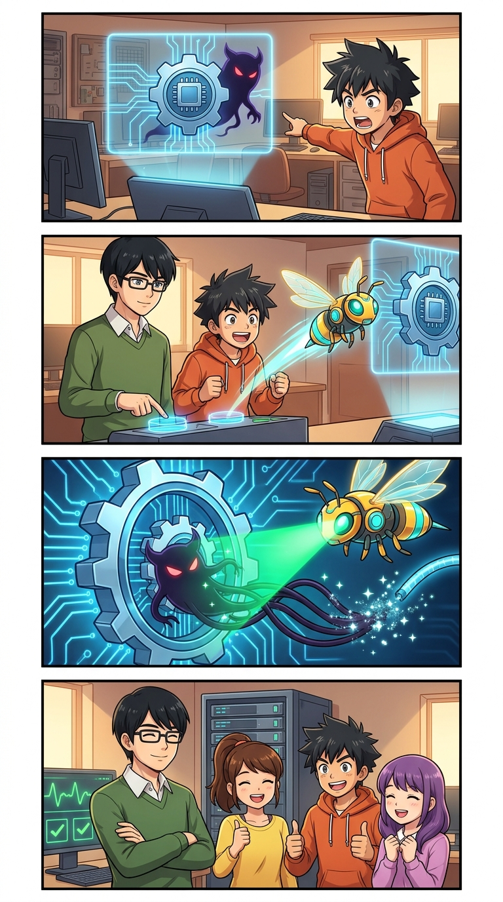
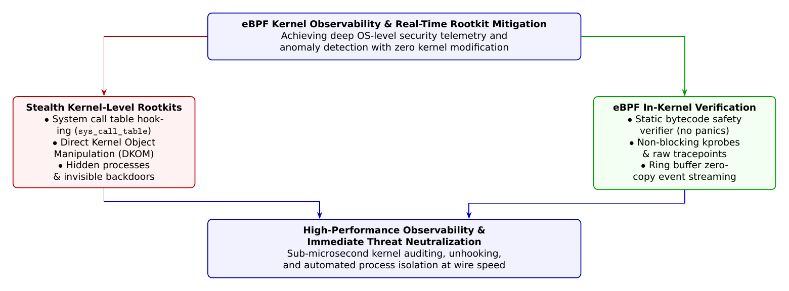

🎨 4コマ漫画挿絵（文字なし）
AI高解像度生成
▲ 【挿絵】青葉台高校 情報科学部＆帝都科学大学サイバーディフェンス・ラボでの実践シーン
📖 小説本文
### 1. プロセス一覧から消えた侵入者
「悠真先輩、サーバーのCPU使用率が異常に高騰しているのに、`ps aux` や `top` コマンドを見ても原因となるプロセスが1つも表示されません！」 神崎蓮が端末の黒い画面を前にキーボードを叩きながら声を上げた。
「ネットワークインターフェースの送受信バイト数は秒間ギガビットに達している。しかし、`netstat` や `/proc/net/tcp` には対応するソケットエントリが存在しない……」 葵も首をかしげる。
悠真がコンソールを覗き込み、冷静に口を開いた。 「カーネルの奥深くに『ルートキット（Rootkit）』が潜航しているな」
「ルートキット……！ ユーザーランドの監視ツールを完全に欺く、OS深部の不正プログラムですね」 結衣の表情が引き締まる。
「そうだ。攻撃者はカーネル空間（Ring 0）の特権を奪い、システムコールテーブル（`sys_call_table`）の関数ポインタを改ざんしたり、`task_struct` のリンクリストを切り離すDKOM（Direct Kernel Object Manipulation）を実行したんだ。これにより、OS自体が『攻撃者のプロセスや通信は最初から存在しない』と信じ込まされてしまう」
---
### 2. カーネルの砂場：eBPFの数理安全保証
「従来のアンチウイルスや監視エージェントでは、システムコール呼び出しのたびにユーザー空間とカーネル空間のコンテキストスイッチが発生して、劇的な性能低下を引き起こします。それに、カーネルモジュール（LKM）を書いて監視しようとすれば、バグが1つあるだけでカーネルパニック（ブルースクリーン）を引き起こしてしまうリスクがあります」 蓮が技術的なジレンマを指摘した。
「その壁を打ち破った革新技術が『eBPF（extended Berkeley Packet Filter）』だ」 悠真がアーキテクチャの概要をスケッチした。
「eBPFは、Linuxカーネル内部で安全にサンドボックス化されたバイトコードを実行するインカーネル仮想マシンだ。 最大の肝は、ロード時に走る厳格な『静的ベリファイア（In-kernel Verifier）』にある。 ベリファイアは有向非巡回グラフ（DAG）を用いて、プログラムのすべての実行パスを網羅的に検証する。無限ループの不在、境界外メモリアクセスの禁止、未初期化レジスタの参照禁止を数学的に証明できたバイトコードだけが、JITコンパイラによってネイティブ機械語へ変換され、実行を許可されるんだ」
「つまり、カーネルを絶対にクラッシュさせない保証を持ちながら、C言語並みのネイティブ速度でカーネル内部のイベントを監視できるのね！」 葵が身を乗り出した。
---
### 3. フックとリングバッファ：超高速テレメトリ
結衣がeBPFプログラムのフック構造を解説する。 「カーネルの任意の命令アドレスにアタッチできる `kprobe` や、カーネル内にあらかじめ埋め込まれた不変の計測ポイント `tracepoint`、さらにネットワークスタックの最深部であるXDP（eXpress Data Path）にeBPFプログラムをフックします」
蓮が手際よくBPFトレーススクリプト（bpftrace）をコンパイルし、カーネル空間にアタッチした。 「システムコールテーブルのメモリ領域を走査するeBPFプローブを常駐させました。システムコールの実行前（sys_enter）と実行後（sys_exit）の挙動、そしてスケジューラのコンテキストスイッチをリングバッファ経由でゼロコピー転送します！」
ターミナルに、これまで不可視だったカーネル内の微小なイベントが毎秒数十万件の勢いで流れる。
「……捕捉しました！ `sys_getdents64`（ディレクトリ一覧取得）と `tcp4_seq_show` の先頭命令に、不正なインラインフック（JMP命令）が挿入されています！ ルートキットの隠蔽ルーチンがリアルタイムに露呈しました！」
---
### 4. 静寂を取り戻した深淵
「eBPFプログラムから該当プロセスのメモリマップを特定し、カーネルセキュリティモジュール（LSM: Linux Security Modules）のeBPFフックで通信ソケットを即座に破棄するぞ」 悠真の指示のもと、蓮がワンライナーを実行した。
ナノ秒のオーダーでパケットフィルタリングとプロセス隔離が発動。不正なJMP命令がクリーンな正規命令へと自動修復（Unhooking）されると、隠蔽されていた暗号資産マイニングプロセスが画面上に姿を現し、SIGKILLによって瞬時に消滅した。
サーバーのCPU負荷メーターが滑らかに平常値の3%へと落ち着いていく。
「OSの心臓部を傷つけることなく、深海のようなカーネル内部に光を届ける守護の瞳……eBPFって本当に頼もしいですね！」 葵と蓮、結衣が笑顔で顔を見合わせた。 見えない脅威を、見えないままにさせない。エンジニアたちの緻密なコードが、現代インフラの生命線を静かに支え続けていた。
📊 セキュリティ構造図解 (TikZ LuaLaTeX生成)
国家安全基準・工学図解
▲ 【技術構造図】IPAデジタルスキル標準・国際規格に準拠した仕組みのモデル化